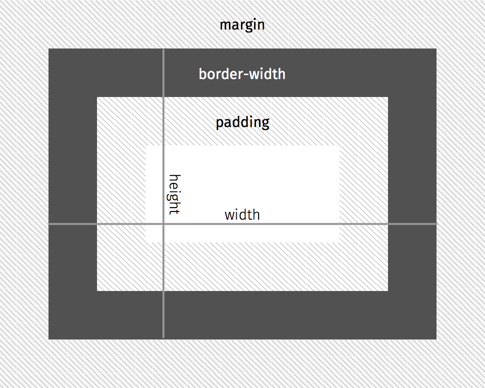

Einheit 3
Inhalt
Bilder
Kontur
Das Box-Modell
Klassen
IDs
Vererbung
<div> und <span>
Bilder
Um Bilder in ein HTML-Dokument einzubetten gibt es das <img>-Tag. Das Tag besitzt kein schließendes Pendant. Der Pfad zum Bild wird als Wert des src-Attributs angegeben. Zusätzlich kann das alt-Attribut mit einem alternativ Text, beispielsweise für Blinde, angegeben werden.
<img src="imgs/bild-01.png" alt="Alternativtext">
Kontur
Mit Hilfe von CSS ist es möglich, Elementen eine Kontur zu geben. Hierfür gibt es drei Eigenschaften:
p {
border-style: solid;
border-width: 1px;
border-color: #000000;
}border-style gibt die Art der Kontur an. Mögliche Werte sind solid, dotted und dashed.
border-width gibt die Breite der Kontur an.
Mit border-color wird die Farbe der Kontur definiert.
Häufig wird für die drei Werte folgende Kurzschreibweise verwendet:
p {
border: 1px solid #000000;
}Es ist möglich, für jeder Seite des Elements eigene Kontureigenschaften zuzuweisen. Dafür wird folgende Syntax verwendet:
p {
border-top: 1px solid #000000;
border-bottom: 3px solid #FF0000;
border-left: 5px dashed #0000FF;
border-right: 1px solid #00FFFF;
}Sollen nicht alle drei, sondern nur ein Wert für eine Seite angepasst werden, so ist auch dies möglich:
p {
border-top-style: dashed;
border-bottom-width: 2px;
}Das Box-Modell
Mit Hilfe der Strukturtags, die aus Einheit 2 bekannt sind, können wir nun also das HTML-Dokument in die Bereiche einteilen, aus denen später das Layout bestehen wird. Um den nächsten Schritt in Richtung des finalen Layouts zu gehen, gilt es nun die Größe der Elemente festzulegen. Hierfür gibt es das CSS Box-Modell.
Das im folgenden erklärte Box-Modell funktioniert allerdings nur bei Block-Elementen (z. B. die Strukturtags, <p>, <h1>). Der Unterschied zwischen Block- und Inline-Elementen ist aus Einheit 1 bekannt.
Achtung: Das ursprüngliche Box-Modell von CSS ist umintuitiv und für die meisten Fälle komplett ungeeignet. Deshalb wird in diesem Tutorium nur das moderne Box-Modell verwendet – dieses ist aber nicht standardmäßig aktiv.
Damit das moderne Box-Modell verwendet wird muss die Eigenschaft box-sizing auf border-box gesetzt werden. Folgender Code setzt die Eigenschaft für alle vom <body>-Tag abstammenden (also alle) Elemente.
body {
box-sizing: border-box;
}Um die Größe eines Objekts anzugeben gibt es in CSS drei Eigenschaften: die Größe (width & heigth), den Innenabstand (padding) und den Außenabstand (margin).
Mit width und height wird die Breite und die Höhe des Objekts angegeben. Mit padding der Abstand, den der sich im Objekt befindende Inhalt vom Rand des Elements haben soll. margin gibt den Abstand an, den das Objekt zum nächsten Objekt haben soll, bzw. denn das Objekt vom Rand seines Elternelements hat.
Beim modernen Box-Modell sind die Breite der Kontur (border-width) und der Innenabstand (padding) in den Angaben für Breite (width) und Höhe (height) enthalten.

article {
width: 500px;
height: 400px;
padding: 25px;
margin: 50px;
border: 1px solid black;
}Dieser Code bewirkt also, dass das Element insgesamt 500px breit und 400px hoch ist. Der sich im Element befindende Inhalt kann also 448px (500px - 25px - 25px - 1px - 1px: Breite abzügliche linkem und rechtem Innenabstand und linker und rechter Kontur) breit und 348px (400px - 25px - 25px - 1px - 1px: Höhe abzüglich oberem und unterem Innenabstand und oberer und unterer Kontur) hoch sein.
Das nächste Element muss mindestens 50px entfernt von diesem Element sein. Dabei ist wichtig, dass die Außenabstände zweier Elemente nicht zusammenaddiert, sondern miteinander verrechnet werden. Sollte auf das <article>-Element also noch ein <article>-Element folgen, so beträgt der Abstand zwischen den beiden 50px. Sollte auf das <article>-Element ein <footer>-Element folgen, dass einen Außenabstand von 70px hat, so wird der Abstand zwischen den beiden Elementen 70px sein.
padding und margin können, genau wie border, auch für einzelne Seiten angegeben werden:
article {
padding-top: 25px;
padding-right: 50px;
padding-bottom: 25px;
padding-left: 50px;
}Hierfür gibt es auch eine Kurzschreibweise. Für margin und padding können auch vier Werte in Folge angegeben werden. Diese geben dann die Werte für top, right, bottom und left an. Der Code oben kann also auch so geschrieben werden:
article {
padding: 25px 50px 25px 50px;
}Klassen
Mit den bisher bekannten CSS-Selektoren (Einheit 2) ist es möglich, das Aussehen jedes Elements, das mit einem bestimmten Tag ausgezeichnet ist, zu beeinflussen (z. B. h1 oder p) oder die Auswahl genauer zu fokussieren, in dem man nur die Elemente, die mit einem bestimmten Tag ausgezeichnet sind auswählt, die sich innerhalb eines anderen, spezifizierten Tag befinden (z. B. header h1, article p strong). Mit Hilfe von Klassen ist es zusätzlich möglich, ganz bestimmte, von Hand im HTML-Code gekennzeichnete Elemente auszuwählen (sowohl abhängig von ihrem Tag (bestimmtest Tag mit bestimmter Klasse), als auch unabhängig davon (bestimmte Klassen)).
Eine Klasse wird als Wert des Attributs class in das öffnende Tag eines HTML-Elements geschrieben. Der Name der Klasse ist frei wählbar, Groß- und Kleinschreibung sind unerheblich. Der Name darf nicht mit einer Zahl beginnen und darf kein Leerzeichen enthalten (es ist Konvention stattdessen einen Bindestrich zu verwenden). Eine Klasse darf beliebig oft im Dokument bei beliebigen Elementen vorkommen.
<h1 class="farbig">Überschrift</h1>
<p class="farbig">Beispieltext 1</p>
<p>Beispieltext 2</p>
Um eine Klasse als Selektor in CSS zu verwenden, wird vor den Klassenname ein Punkt geschrieben. Wird nur die Klasse als Selektor angegeben, werden alle Elemente, die mit dieser Klasse gekennzeichnet sind ausgewählt:
.farbig {
color: #FF0000;
}Durch diesen CSS-Code werden alle Elemente mit der Klasse farbig rot dargestellt, im oberen Beispiel die Überschrift und der Beispieltext 1.
Sollen nur Elemente, die mit einem bestimmten Tag ausgezeichnet sind und die Klasse besitzen, selektiert werden, so wird die Klasse direkt an das Tag gehängt:
p.farbig {
color: #FF0000;
}Durch diesen CSS-Code wird jedes <p>-Tag mit der Klasse farbig rot dargestellt, im oberen Beispiel nur der Beispieltext 1.
Es ist wichtig, dass zwischen Tag und Klasse kein Punkt steht, da der Klassenselektor auch mit den aus Einheit 1 bekannten einfachen Selektoren kombiniert werden kann:
p .farbig {
color: #FF0000;
}Durch diesen CSS-Code wird jedes Beliebige Tag mit der Klasse farbig rot dargestellt, dass sich innerhalb eines <p>-Tags befindet.
IDs
Ähnlich wie Klassen funktionieren auch IDs:
<h1 id="title">Überschrift</h1>
Der entsprechende CSS-Selektor lautet:
#title {
color: #FF0000;
}IDs dürfen aber nur ein einziges Mal im Dokument vorkommen. IDs werden heute nicht mehr eingesetzt um sie als CSS-Selektor zu verwenden (für Javascript durchaus). IDs bieten keinerlei Vorteile gegenüber Klassen (auch Klassen müssen nicht mehrmals eingesetzt werden) und beschränken die Flexibilität und Skalierbarkeit des Codes enorm.
Vererbung
Beginnt man im CSS Klassen einzusetzen, so muss man sich unbedingt mit Vererbung auseinandersetzen. Der CSS-Code, der auf ein Element angewendet wird, wird automatisch auch auf alle Kinder weitergegeben.
body {
color: #FF0000;
}Dieser CSS-Code verändert also nicht nur die Farbe des Textes, der sich direkt <body>-Tag befindet, sondern auch die Textfarbe aller von diesem Element abstammender Elemente, das bedeutet aller Elemente, die sich innerhalb dieses Tags befinden.
h1 {
color: #00FF00;
}Durch den oberen Beispiel-Code wäre nun also aller Text, auch Überschriften, rot. Dieser CSS-Code überschreibt nun die an das <h1>-Tag vererbte Eigenschaft aber für dieses. Die Überschrift wird nun grün Dargestellt.
article h1 {
color: #0000FF;
}Durch den zweiten Beispiel-Code werden nun also alle <h1>-Tags auf der Seite grün dargestellt. Dieser CSS-Code überschreibt nun diese Eigenschaft des <h1>-Tags für alle <h1>-Tags, die sich innerhalb eines <article>-Tags befinden. Dies liegt aber nicht an der Reihenfolge der Definitionen im CSS-Code, diese ist völlig unerheblich, sondern daran, dass der hier verwendete Selektor spezifischer ist. Das bedeutet, die Angabe „alle <h1>-Tags in einem <article>-Tag“ ist genauer als „alle <h1>-Tags“. Je spezifischer ein Selektor ist, desto wichtiger sind die definierten Eigenschaften und desto eher überschreiben sie bereits definierte oder vererbte Eigenschaften.
Nach spezifischer als eine Reihe von Tags, wie im dritten Beispiel-Code ist die Angabe einer Klasse.
h1.title {
color: #FF0000;
}Dieser CSS-Code würde also die Textfarbe auch für <h1>-Tags ändern, die sich innerhalb des <article>-Tags befinden, wenn sie die Klasse title besitzen.
Durch Vererbung und Überschreiben von Eigenschaften ist es möglich, Eigenschaften die für alle oder viele Elemente gelten sollen nicht immer wieder zu schreiben, sondern diese nur einmal für ein Eltern-Element zu definieren. Ein typisches Beispiel wäre die Schriftfamilie (font-family), die häufig als Eigenschaft des <body>-Tags definiert wird. Sollten dann zum Beispiel alle <h1>-Tags eine andere Schriftfamilie zugewiesen bekommen, so kann die vom <body>-Tag vererbte Familie leicht überschreiben werden.
<div> und <span>
Manchmal reichen die vorhanden HTML-Tags nicht aus und es wäre praktisch eigene Tags zu definieren. In diesem Fall kommen die Tags <div> und <span> ins Spiel.
In diesem Dokument sind zum Beispiel alle HTML-Tags anders dargestellt als normaler Text: sie sind in einer Monospace-Schrift geschrieben und haben eine graue Hintergrundfarbe. Es gibt aber kein <tag>-Tag, mit dem die Tags einfach ausgezeichnet werden könnten.
<div> und <span> sind Platzhalter-Tags, die von sich aus weder eine optische Veränderung bewirken, noch eine semantische Bedeutung besitzen. Mit Hilfe von Klassen ist es damit möglich, eigene Tags zu erstellen. Bei <div> handelt es sich um ein Block-Tag, bei <span> um ein Inline-Tag.
Die HTML-Tags, denen ich eigene Eigenschaften zuweisen möchte befinden sich im Fließtext, es ist also ein Inline-Tag nötig. Ich zeichnete also alle Tags wie folgt aus:
<p>
Durch den zweiten Beispiel-Code werden nun also alle <span class="tag"><h1><span>-Tags auf der Seite grün dargestellt. […]
</p>
Und definierte dann im CSS-Code meine Eigenschaften für die Klasse tag.
<div> und <span> sind mächtige Instrumente, da sie es erlauben von vorgegeben Schemen abzuweichen und ganz eigene Definitionen zu schaffen.